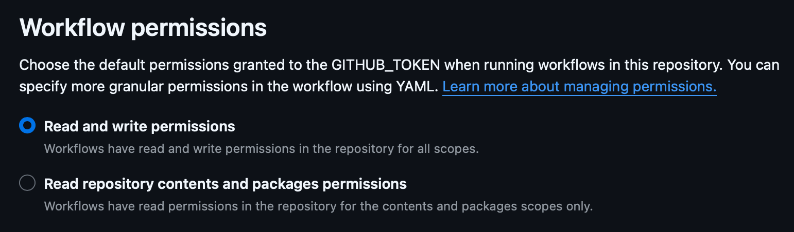

Deployment
Deploying an application involves compiling it for each target platform and distributing codesigned binaries that users can install. AppBundler supports cross-platform bundling — meaning a UNIX host can produce installers for multiple platforms — but Julia itself does not support cross-compilation. As a result, compilation must be performed natively on each target OS and architecture. This can be a significant burden for indie developers, which is where CI workflows become essential.
The one exception is macOS: because Apple Silicon Macs support Rosetta 2, an :aarch64 host can run :x86_64 binaries, so both architectures can be tested on a single machine. For all other platforms, you need a matching host, which is straightforward to obtain through GitHub Actions or similar CI infrastructure.
Code Signing
Both DMG (macOS) and MSIX (Windows) bundles must be codesigned before users can install them. Self-signed certificates are possible but require users to manually trust the certificate, which creates friction. To distribute without that friction, you need a certificate from a trusted provider.
- macOS: Requires enrollment in the Apple Developer Program.
- Windows: Requires a commercial codesigning certificate. CERTUM currently offers the best value for open-source projects.
AppBundler expects provider-issued certificates in .pfx format, placed at:
meta/dmg/certificate.pfx # macOS
meta/msix/certificate.pfx # WindowsTesting with Self-Signed Certificates
Before purchasing a certificate, you can generate self-signed certificates to test the full signing workflow:
AppBundler.generate_signing_certificates()This prints two passwords to the terminal: MACOS_PFX_PASSWORD and WINDOWS_PFX_PASSWORD. You can then pass the password when building:
appbundler build . --build-dir=build --password="{{MACOS_PFX_PASSWORD}}"Alternatively, omitting --password will prompt for it interactively.
macOS Notarization
macOS codesigning has an additional requirement beyond certificate signing: Apple requires all distributed applications to be notarized. Notarization means submitting the bundle to Apple's servers, where it is checked for proper structure and the absence of malware. Two settings must be enabled in LocalPreferences.toml for a bundle to pass notarization:
dmg_shallow_signing = false
dmg_hardened_runtime = trueNote on shallow vs. deep signing: Deep signing is disabled by default because it takes considerable time for Julia applications and currently tends to fail with
rcodesigndeep signing. Unfortunately,codesign --verify --deep --verbose=4 myapp.apppasses even with shallow signing, so the only reliable way to verify that deep signing is correct is to submit the bundle to Apple's notary service and inspect the response. Budget some time for this when setting up notarization for the first time.
Custom Signing Solutions
Some certificate providers deliver keys inside secure hardware tokens rather than as a .pfx file. Hardware token integration is planned for a future release. In the meantime, users needing custom signing workflows can use the lower-level signing API described in reference.md.
GitHub Actions Workflow
GitHub Actions is the recommended CI solution for cross-platform Julia application deployment. It provides hosted runners for Windows, macOS, and Linux across all common architectures, making it straightforward to build and sign for every platform from a single workflow.
An example workflow is available at Release.yml. It can be installed into your project automatically by running:
AppBundler.install_github_workflow()This places the workflow file at .github/workflows/Release.yml, where GitHub picks it up. The workflow can be triggered manually from the Actions tab and will compile the application for all platforms, then attach the resulting installers to a new GitHub Release.
One configuration step is required: you must increase the default permissions granted to GitHub Actions so that the workflow can create releases and upload artifacts. This setting is found under Settings → Actions → General → Workflow permissions in your repository.

GitLab CI Workflow
GitLab's shared runners are Linux-only, which limits its usefulness for Julia application deployment — macOS and Windows runners are available only as a paid add-on from some GitLab instances. If your project is already hosted on GitLab, a CI configuration that provides a similar deployment experience to the GitHub workflow above is available in the crypto-julia example repository.